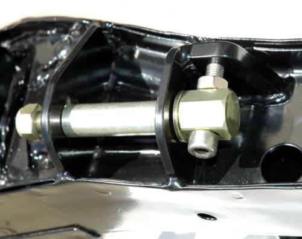

-
JimmyZ89 wrote: - snip - My only concern with moving the hole as far down
as you have it drawn is the stress it's putting on the inner control arm bushing.
Stress … you bet.
Refer back to the top of page one of this post, where there is a guide on, "How to
"Calculate Negative Camber." Note, for a 17" wheel that has 5/8" negative camber,
one would need 2ú positive camber added to compensate as indicated in the illustration
below.
It's my opinion that degree of angle would create a lot of stress on the mounting
components when using the hard polyurethane replacement bushings.
It now appears that any attempt to correct negative camber problems requires a fully
adjustable mounting system. -
I still think that this idea you have would be the best solution for adjustment. It's simple and easy to manufacture. Although using spherical bearing or heim joints would be a must for any stress/binding issues. This past weekend I just pulled the entire rear end assembly out of 88 Z that I plan on modifying with just the ideas I mentioned before. It all comes down to cost. Here are some link to look at:
http://www.modularfords.com/articles…ol_Arms/1.html
http://www.pirate4x4.com/tech/billav…nts/index.html
http://www.battleversion.com/240WeldKit.htm Something like this could be used on the rear if your up to cutting and welding it on in place.89 Black Z 5spd, tokico hp, msa springs, k&n cone, dynomax racemagnum muffler, stanza tb. -
Thanks for the links. These are much better solutions than my bolted plate idea.
The poly ball (above) is an interesting solution but the existing barring journal IDs on the
ends of the "C" are not big enough, so one would have to weld new ones on and be a
bit more quiet the the following Uni-Ball and Superflex Joint. I could easily make the polys.
However if one was to do all the work then the Uni-Ball or the Superflex Joint is
probable a better solution.
http://www.polyperformance.com/shop/Uni … 16755.html
The Uni-Ball WSSX14T would be a good fit. They cost 55$ each. One would have
to machine the existing sleeve, cut out the old barring journals and weld in new ones
to fit the OD of the barring journal. These need to be lubed. I have looked at locating
Zerk fittings on the "C" member but are and there is a clearance issue that would need
to be solved.
I really like the Rubicon Express - Superflex Joint (below) because it would be the best
fit of all three. They are $40 each so a better buy. The bolt and the mounts on the
subframe are a "near" perfect match for the Superflex. The outer diameter of the ball
housing is the same as that on the "C" arm. Removing the old ones and welding in the
Superflex Joint would be a bit of work but the overall function would solved the problems
and have a closer OEM finish.
Later in the week, when I have more time, I will do a mechanical drawing of the Rubicon
Express - Superflex Joint installation on the Z31 subframe.
-
I haven't been following this thread as I fixed my camber issues several years ago.
On my race car I did the rear camber by using the plates off an old crossmember and got the results that other have. -2.5* is great for autoX. I can go to -3.0+*. My street car I changed the springs and the -2* works fine for me so I haven't done anything to it.
On the front of the race car I have GC camber/caster plates. Gives me all the adjustability I want. On my street car I didn't go to coilovers so i slotted the control arm at the crossmember and put in an eccentric bolt. The difference is that we used one from a ford truck. The diameter and length were the same, but the eccentric was large enough to allow for 2* of adjustment. I slotted it for maximum negative camber and with the later model control arms can get -2.5* camber. I guess what I am saying is that the ideas you have come up with are really great, but you may be trying to reinvent the wheel. Check this out:
http://www.spcperformance.com/PROD_DIR/ … 7500&cmd3=
These are not the ones that will work as I didn't have time to check out what the correct size would be. The other issue would be the lack of room to work with in the camber adjusting area. Just something to look at.…and how much HP do you have at 0 boost -
Yes, you are correct. This is a lot of work for one or two degrees of adjustment more
than the 2 degrees you have on you setup. My guess is that with 2ð you don't have
a noticeable binding issue. See the diagram bellow.
My complex 'pivot' bearing solution is one that would eliminate any binding. Some
have expressed concern about the binding when approaching 4ð.
Certainly, the original solution (page one), that many have done, is the simplest to do
and works for most users.
As far as your front end, you are among the few that have the Ground Control camber-
caster plates. GC no longer makes them for us.
-
Gary:
Check out the premade weld on brackets for the RE-Superflex joint. This would make things even easier.
http://www.offroadtoystore.com/Merch…ts-ControlArms2006 & 2007 Basketball National Champions! 2005, 6, & 7 Basketball SEC Champions! 2006 Football National Champions! 2006 Football SEC Champions! 2008 SEC Champions! 2008 Football National Champions! First University in history to capture three titles in a single year! I was there at all of them, and it was awesome! Go Gators! -
Please correct me if I'm wrong on any of this.CAG8OR wrote: Gary: Check out the pre-made weld on brackets for the RE-Superflex joint. This would make things even easier.[/url]
You are referring to this:
Using the Supper-Flex system:
One would have to cut off all the stock brackets on the subframe, weld on the replacements and
do the same for the control arm journals. I don't see how one could keep the suspension geometry
correct with all those changes. One would have to build a jig to hold the sub-frame and the control
arms to insure proper alignment during the replacement and one would still have to make the
adjustable mounts
Seems to me a lot of work for an extra 2 degrees of adjustment. -
Don't get me wrong, I think what you are doing is fantastic and I would use your ideas if I was doing it over again. I just think that for most people, unless someone is going to manufacturer the parts, it is beyond their abilities. Also I guess I missed the point, I was under the impression that people were trying to get back to stock camber. I haven't seen anyone with -4*. In that case yes you are on the right track. I will be paying more attention to this thread from now on.1artworkz wrote: Yes, you are correct. This is a lot of work for one or two degrees of adjustment more
than the 2 degrees you have on you setup. My guess is that with 2ð you don't have
a noticeable binding issue. See the diagram bellow.
My complex 'pivot' bearing solution is one that would eliminate any binding. Some
have expressed concern about the binding when approaching 4ð.
Certainly, the original solution (page one), that many have done, is the simplest to do
and works for most users.
As far as your front end, you are among the few that have the Ground Control camber-
caster plates. GC no longer makes them for us.
…and how much HP do you have at 0 boost -
You're right. Most people won't do this and yes again; people do want to get back to there stock camber.
The illustration I've done are for up to 4 degrees + camber correction without binding. -
Russ I had -4* when I first installed my MSA springs 10 years ago before I slotted my control arm mounts. After that fix it went to -2 but it still ate up the inside of my tires just not as fast. I brought this up because of the binding that occurs, albeit it's a little bit, it's just worse with poly bushing sine they're firmer. Does it mean that the camber fix mod has been wrongly done all along, no. Most everyone would be happy with just moving the mount hole and leaving it at that. I for one had been for a long time until my springs started to sag. This next fix I want to go a few steps further since I'll be installing 240sx coilovers and building up the rest of the my car. I believe with gary's camber plate idea I'll be able to take my car to almost 0* for drag race days and add camber for road race days. The hiem joints are just another one of those mods that have been done to other cars, road course/drag/off road etc, that I feel would benefit my Z.89 Black Z 5spd, tokico hp, msa springs, k&n cone, dynomax racemagnum muffler, stanza tb. -
Jimmy,
I don't doubt that -4 is terrible on tires. I guess since I never had much of a problem with negitive camber in my cars so the simple eccentric bolt would take care of it.
I really like the idea of being able to adjust my suspension to whatever I want or whatever the conditions require, so I really like what you guys are doing.
When I revisit my suspension, once I get the engine rebuilt I may be doing just what you are talking about.…and how much HP do you have at 0 boost -
I am at -2.5 on the LR and -1.8 on the RR and I killed a brand new set of 275/35/18's in less than 5,000 miles! That is the best it will do with the current mods and spring configuration. I want to be able to get to -.5 or even zero, with the ability to go more negative if needed. As stated previously, most people won't want or need to do this, but I do! I have had this car nearly 22 years now and I finally want it fixed. I thought that I was going to have it fixed last year when I sunk all that time and effort into it, but what a disappointment!
Gary:
About the mounts, it would be difficult, but no more difficult than getting the correct alignment on the control arms for the new SF joint mount. I don't think they are going to work with current configuration will they? I could not find any dimensions. I am sure you will find the best solution. There are tons of mounting options on the Rubicon Express builders page. Those 1.25" threaded weld spuds would give and increased amount of adjustment, but would be an extremely complicated design.2006 & 2007 Basketball National Champions! 2005, 6, & 7 Basketball SEC Champions! 2006 Football National Champions! 2006 Football SEC Champions! 2008 SEC Champions! 2008 Football National Champions! First University in history to capture three titles in a single year! I was there at all of them, and it was awesome! Go Gators! -
OMG. I had Gary's monoball idea months back but nobody on Club-S12 gave a shit, so I just disregarded it. I'm glad to see you found the exact same resources I did when I was looking into this. There are some people kicking around the idea of making custom RCAs for the S12, Bartco is the guy to talk to. As much as I like this idea, I'm sure there are much cheaper solutions utilizing stock equipment. You don't know me, but I'm a HUGE fan of utilizing stock parts. I like this because it keeps them interchangeable and I can swap any of my suspension equipment to a new chassis if I need to without always having to modifying it all over again.
Anyway, instead of using your "soft" poly bushings, look into high misalignment spacers. They are conical shaped and can allow the arm to be moved around more and also avoid most binding issues. And as for your lubing issues, some of these are PTFE or Delrin lined so they do not need to be lubricated very often, if not at all. As for mounting the monoballs, either circlip or making it interference fit. I was thinking of using sleeves to hold the monoballs in place then tacking the sleeves on the ends. Another solution would be completely custom monoballs, but that requires a set of 50 or more orders. =(
I even have some measurements of the control arm, although not very accurate because I just used a ruler and the bushing was still on, so I don't have the exact diameter of the stock RCA bushing. Anyway I hope you can develop or come up with something because I don't have the resources for it.
Here are some general measurements for the RCA
1 3/8" ID slot(holds the bushing)
2 1/4" length
And I know Gary's site has the eccentric bolt OD and all that.
Pic from a few months back that I drew up.
Here are some sites of stuff I checked out.
Just some stuff I saw that looked interesting and helpful.
http://www.kartek.com/products/all/heims/heims.htm
spherical ball ends
FK MONOBALLS
PLAIN Grooved
WSSX12T WSSX12TV
http://www.fkrodends.com/WSSX-T%20%20WSSX-TV.htm
COM12T cheaper
FK High misalignment bushing
12-10HB
http://www.fkrodends.com/HB.htm
http://www.qa1.net/qa1_industrial/index.html
QA1 parts
MONOBALL
WPB12T
Note: These are just the parts I looked at. I don't know if the ones I chose are correct so don't go buying these and expect it to work. It was only to give me a general idea of things. I do like the monoball idea very much, because it would dramatically improve the IRS, even without the camber adjustment because it removes most of the play/slight bind out of the arms on VERY lowered cars.
Edit: I forgot about this. It's the Datsport 510 camber adjustment. Yeah, it's a different car BUT the rear camber problem is the exact same. Anyway I was thinking about buying the kit but it was WAYY too expensive. Maybe somebody could replicate something similar. Or I'll just wait for Gary to develop something more interesting.
I totally forgot to add the link.
http://www.datsport.com/Adjustable_rear … ember.html -
mod_mastaz wrote: - snip -
Edit: I forgot about this. It's the Datsport 510 camber adjustment. Yeah, it's a different car BUT the rear camber problem is the exact same. Anyway I was thinking about buying the kit but it was WAYY too expensive. Maybe somebody could replicate something similar. Or I'll just wait for Gary to develop something more interesting.

This was an idea I had but just could not get in fully formed in the mind.
WOW! That would be so much easier to make than my notched plate design.
With that concept, you don't need to have the concentric washer retainer
plates. All that is required is a large hex rod drilled and taped to the stock retainer
bolt and the adjusting screw and a bit of welding.
My thanks to "mod_mastaz" for your post and the links … none of which I have.
I ordered the 14 mm swivel ball joint bearings (uniballs) from http://www.mcmaster.com/ on 03/03.
They tell me I'll have them 05/06. Looks like they were out off stock and had to order
them from the manufacture. -
This is similar to the way I WAS going to go about it, except put the adjuster on the bottom for easier access and it would not be the eccentric bolt anymore. It would be the regular bolt and have a U bent spanning the side of the bolt that the nut attaches to going over the the head of the bolt, then having the bolt adjust the center of that "U" bend. Then I decided that, the old way was good enough and I didn't want to spend a whole lot of time on this mod when I have so much other crap to do elsewhere. If my car were driven a lot and I was concerned about to much wear, then I might worry about it. Its not driven much though so…1artworkz wrote:
This was an idea I had but just could not get in fully formed in the mind.
WOW! That would be so much easier to make than my notched plate design.
With that concept, you don't need to have the concentric washer retainer
plates. All that is required is a large hex rod drilled and taped to the stock retainer
bolt and the adjusting screw and a bit of welding.
85 Z31 6.0 LSX turbo 766whp/792wtq
04 GTO, LS6, big cam, porting, N20… underway for summertime daily driver.

Copyright © 2006–. All rights reserved. Privacy Policy